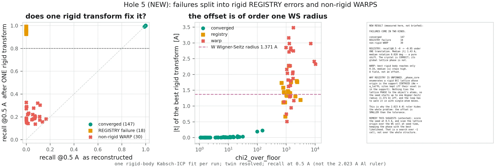
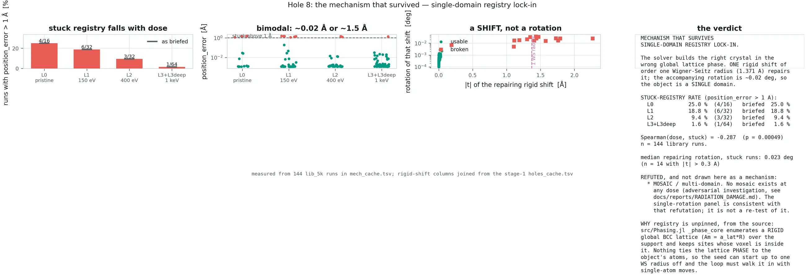
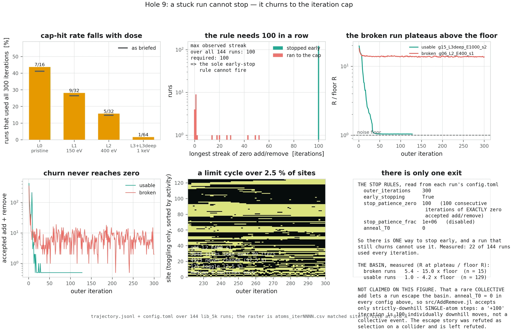
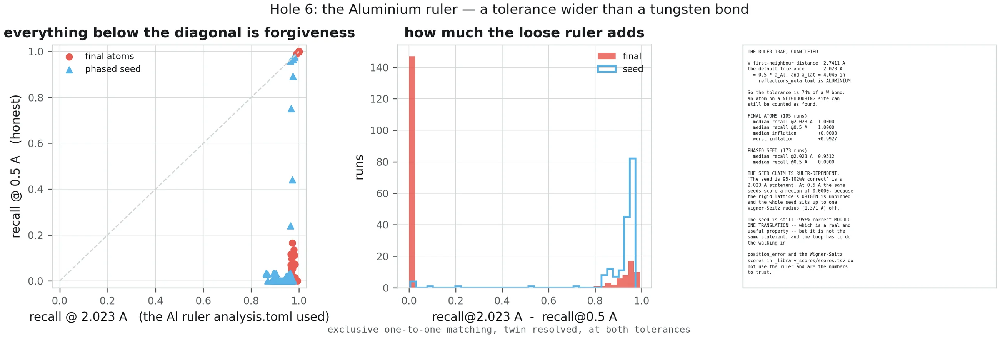
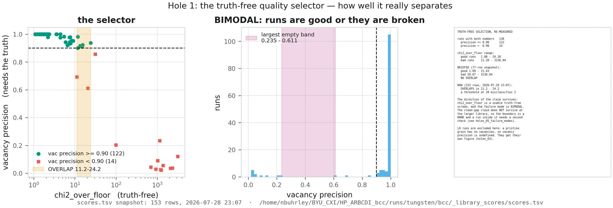

A reconstruction that fails does not announce itself. It produces a full grain of atoms, a clean-looking density, and a respectable-looking recall score. This page is about how to catch it anyway — and what the 513 scored runs in this archive say about how often it happens and why.
1.What convergence looks like
Three things happen at once when a reconstruction succeeds, and the simultaneity is the point:
- The R-factor reaches the noise floor. The model's disagreement with the measurement drops until it equals the disagreement the true structure would have, which is set by photon shot noise. There is nothing structural left to explain.
- The atom count locks. The count stops changing — not because it hit a limit, but because adding or removing any atom makes the fit worse.
- The add/remove churn goes to zero. The solver runs out of moves it wants to make, and the run ends itself early rather than exhausting its iteration budget.
A failed run has none of these. Its R-factor flattens above the floor, its count drifts or
stalls short, and it churns until it hits the cap. The best single number is the ratio of
the two fits — χ²/floor — and it separates the archive
cleanly, spanning 1.08 for the best run to 10,370 for the worst.

25kD_s42,
χ²/floor 10,370, which produced 34,125 atoms for a 24,800-atom truth. Read left to
right and notice how late the difference becomes obvious — the measured peak and the
density look comparable; it is the atom overlay and then the R-factor curve that give it
away.
2.The archive
513 reconstructions with a complete figure suite and a full score. Converged means
χ²/floor < 5; failed means > 50; the band between
is real and populated, not a rounding artefact.
| Grain size | Runs | Converged | Partial | Failed | Converged |
|---|---|---|---|---|---|
| ~5,000 atoms | 207 | 146 | 30 | 31 | 70.5 % |
| ~9,300 atoms | 12 | 3 | 0 | 9 | 25.0 % |
| ~22,000–26,000 atoms | 212 | 14 | 53 | 145 | 6.6 % |
| ~50,000 atoms | 82 | 0 | 79 | 3 | 0.0 % |
| All | 513 | 163 | 162 | 188 | 31.8 % |
Success falls off with grain size, and that is expected: the number of unknowns grows as three coordinates per atom while the number of usefully-measured intensity voxels grows much more slowly. Every run here used three Bragg peaks, which is the minimum that can constrain a 3D displacement field at all. Larger grains want more peaks, not more iterations.
79 of those 82 runs sit in the intermediate band — fitting better than a failure and worse than the floor. They have not stalled at a wrong answer; they have not finished. The three genuine failures there are a much smaller fraction than at 25,000 atoms.
There is almost no partial credit
One property of the archive is worth stating on its own, because it shapes everything that follows. Reconstruction accuracy is not spread smoothly from good to bad — it is bimodal. Bin all 513 runs by their final mean position error and the middle is nearly empty:
| Position error | Runs | Share | Interpretation |
|---|---|---|---|
| below 0.05 Å | 214 | 41.7 % | atomic resolution — the lattice is resolved |
| 0.05 – 0.5 Å | 26 | 5.1 % | the empty middle |
| 0.5 Å and above | 273 | 53.2 % | off by a substantial fraction of a bond |
In the tightly controlled 144-run 5,000-atom library the gap is starker still: 129 runs land below 0.05 Å, 14 land at or above 0.5 Å, and exactly one falls in between.
Continuous error sources — photon noise, an imperfect potential, insufficient iterations — produce continuous degradation. A gap means the outcome is being decided by something discrete: the model either latches onto the correct lattice registry or latches onto a wrong one, and there is no stable state part-way between two lattice sites. This is the single strongest piece of evidence for the mechanism in §4, and it is also good news, because a discrete failure is a failure you can detect and retry rather than an accuracy limit you have to live with.

3.It is not the radiation damage
The obvious hypothesis is that damaged grains are harder to reconstruct, since defects are exactly what the ideal starting lattice does not contain. The 144-run 5,000-atom library was built to test that, with a pristine control and four cascade energies on sixteen different grains. The result runs the other way.
| Damage | Runs | Converged | Partial | Failed | Converged |
|---|---|---|---|---|---|
L0 — pristine, no cascade | 16 | 10 | 2 | 4 | 62.5 % |
L1 — 150 eV | 32 | 21 | 4 | 7 | 65.6 % |
L2 — 400 eV | 32 | 25 | 4 | 3 | 78.1 % |
L3 — 1,000 eV | 32 | 28 | 3 | 1 | 87.5 % |
L3deep — 1,000 eV, deep | 32 | 23 | 9 | 0 | 71.9 % |
The pristine control is the worst row in the table, and the most violent cascade is the best. Not one of the 32 deep-cascade runs failed outright. This is a monotone trend over four of the five levels and it reverses the naive expectation completely.
Because the failure mode is a registry problem, and defects break the symmetry that causes it. A perfect crystal looks the same after sliding it by one lattice site, so nothing in the data prefers one alignment over another and the solver can settle into the wrong one. Put a recognisable cascade in the middle of the grain and that degeneracy is gone — there is now exactly one alignment that explains the measurement.
The gallery's lib_5k_g03_L0 is this argument in a single run: an undamaged
4,828-atom grain, the easiest target in the archive, stalled at 1.48 Å with
χ²/floor 1,478.
Grain shape matters far more than dose. Among the 22,000–26,000-atom runs, sorted by which grain they were reconstructing: grain g09 converged in 5 of 9 attempts (55.6 %), g04 in 5 of 19 (26.3 %), g01 in 4 of 48 (8.3 %), and g02 in 0 of 25. Same code, same damage recipes, same peak set.
4.Two distinct failure modes
Failures are not all alike. Fit one rigid-body transform — a single translation and rotation applied to the whole reconstruction — and ask whether that fixes it. The answer splits the failures cleanly in two.

Registry failure — the crystal is right, its position is wrong
In this group the reconstruction is internally correct. Every bond length, every defect, the whole lattice — right. It is simply sitting in the wrong place, shifted bodily by roughly one lattice site. Apply one translation and it snaps into agreement.
Measured over this group: median recall at 0.5 Å goes from 0.0000 to 0.9551 under a single rigid transform. The median translation needed is 1.419 Å — essentially tungsten's Wigner–Seitz radius of 1.371 Å — and the median rotation is 0.0176°, i.e. none. It is a pure shift, not a misorientation.

The seed lattice is built by laying an ideal BCC grid over the support and keeping the sites that fall inside it, with the grid's origin taken from the support's centroid. Nothing in that construction ties the lattice's phase to the actual atoms — the support knows the grain's outline, not where its lattice planes sit. So the seed can start up to one Wigner–Seitz radius out of registry, and the refinement loop then has to walk the entire crystal into place using single-atom moves. Sometimes it does. Sometimes it cannot, because moving one atom at a time out of a globally-shifted lattice makes the fit worse before it makes it better.
Non-rigid warp — a distorted field
The other group is not fixable by any rigid transform. Its best single translation lifts
median recall at 0.5 Å only from 0.0335 to 0.1939. The error is a
smoothly varying field across the grain rather than a uniform offset: different regions have
drifted different ways. 25kD_s42 in the gallery is an extreme member — and
it is also the one that overpopulated the grain by 9,325 atoms, which is what a warped model
needs in order to keep explaining the measurement.
In the classification drawn on Fig. 2 the split is 18 registry failures against 30 warps; the medians quoted above were recomputed independently from the measurement cache and reproduce the figure's values (1.419 against 1.43 Å translation, 0.0176 against 0.020° rotation). The exact group sizes shift by a couple of runs depending on where the “repaired” threshold is drawn; the two-mode structure does not.
5.Why a stuck run cannot stop itself
A converged run ends early: it stops proposing changes, and the loop notices and exits. The rule is deliberately strict — a long unbroken run of iterations with no atom added and none removed. A run in a limit cycle never gets there. It keeps making changes, each one undone a few iterations later, and burns its entire iteration budget without moving.

This is why the poster says a failed run “churns indefinitely”. It is not a figure of speech and it is not slow convergence — it is a cycle, and waiting longer does not help. The archive contains runs given 3,600 iterations that ended no better than siblings given 200.
6.The metric that hides all of this
The scoring code's default matching tolerance is half a lattice parameter, read from each run's own metadata. In this campaign that metadata field carried aluminium's lattice parameter of 4.046 Å, giving a default tolerance of 2.023 Å — while tungsten's first-neighbour bond is 2.7411 Å.
The tolerance is therefore 74 % of a bond: wider than the registry offset it is supposed to detect. An atom displaced onto a neighbouring lattice site scores as correctly found. The failure mode of §4 is invisible to the metric by construction.

| Group | Runs | Recall @2.023 Å | Recall @0.5 Å | Gap |
|---|---|---|---|---|
| Converged | 121 | 1.0000 | 1.0000 | 0.0000 |
| Failed | 50 | 0.9692 | 0.0013 | 0.9678 |
Not most of them — all of them. Meanwhile 30 of those 50 score below 0.01 at an honest half-ångström. Quoted alone, the loose recall cannot distinguish a single failed reconstruction in this archive from a converged one.
This is why every figure on this site prints both numbers, and why χ²/floor
rather than recall is the headline metric. Note what the loose ruler did not
corrupt: it is a scoring default, not something the solver optimises, so no reconstruction
was ever trained toward it. The conclusions change; the runs do not.
7.Picking the good run without knowing the answer
Everything above is diagnosis. The practical question is what to do at a real beamline, where there is no truth to score against and no way to know whether the reconstruction in front of you is one of the good ones.
The answer is the one on the poster: run several reconstructions and keep the best-fitting.
What makes it work is that χ²/floor requires no truth — the noise
floor follows from photon statistics, which are a property of the measurement.

χ²/floor is computable
from the measurement alone; position error is not. The decision boundary and the region
where the two populations overlap are drawn explicitly rather than hidden — the
separation is very good, not perfect.
Compare three strategies across the archive's seed pairs. Pick blind and you get mean
recall 0.9065 with 8.6 % of runs broken. Pick the lower χ²/floor
of the pair — no truth used — and you get 0.9548 with 4.7 % broken. Let an
all-knowing oracle pick the genuinely better run and you get 0.9552 with 4.7 % broken.
The truth-free rule captures 99.3 % of what perfect knowledge would buy you, and roughly halves the broken-run rate. That is the whole justification for launching reconstructions in parallel rather than serially refining one.
The main page's eight-repeat table is this in miniature: eight independent repeats on one grain, χ²/floor of 1.15, 1.16 and 1.53 against 151, 275, 938, 1,046 and 1,204. Keep the lowest and you get a reconstruction accurate to 0.0017 Å without ever having seen the answer.
8.What would actually fix it
Three things follow from the diagnosis above, in rough order of expected value:
- More Bragg peaks. Three is the minimum for a 3D displacement field, and the large-grain failures look like underdetermination rather than a search bug — the same grain that stalls on three peaks does better on nine. This is an experimental cost, not an algorithmic one.
- Pin the lattice phase at seeding. The registry mode exists because the seed's lattice origin is unconstrained. Scanning that origin over a single unit cell at seed time and keeping the best-fitting phase is a search over about one cell, not over the whole structure — cheap, and it attacks the failure at its source rather than asking the loop to walk it out one atom at a time.
- Score honestly by default. The tolerance should be tied to the material actually being reconstructed. Until it is, read the tight number.
Where to go next
Eight reconstructions in detail — four that reached the noise floor and four that did not, with every diagnostic figure.
How to read these figures →Panel by panel through the diagnostic sheets, including which single panel decides whether a run worked.
How BCDI works →The phase problem, why three Bragg peaks, the twin ambiguity, and what the noise floor actually is.